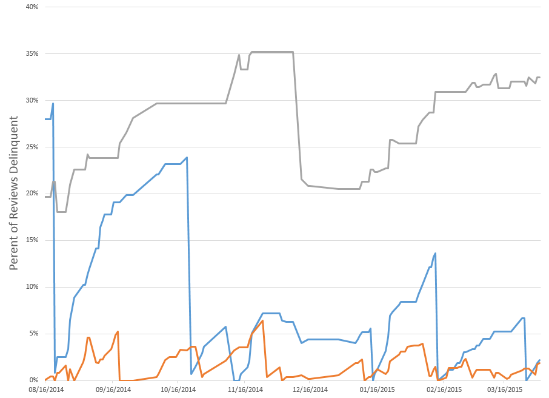
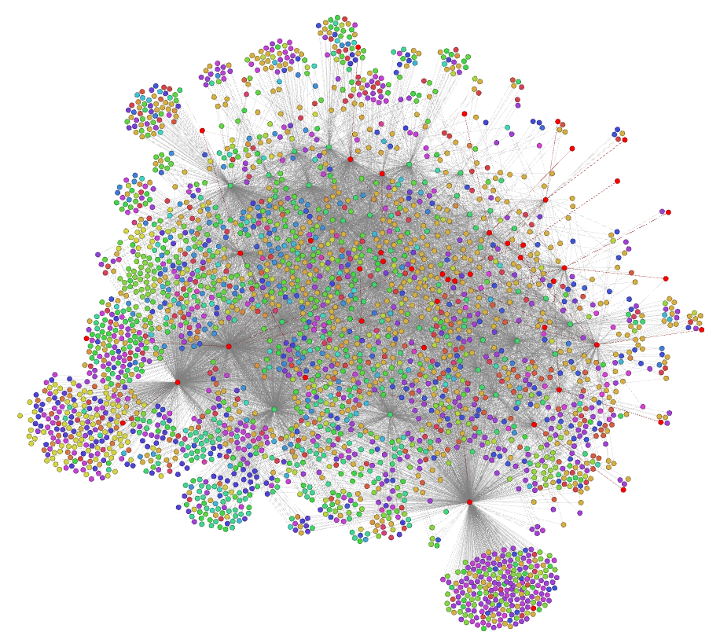

Wiki Accountability
James Montalvo - Daren Welsh - Stephanie Johnston
(Use arrow keys to navigate)
Wikipedia Scale: High End
-
Operating systems: Ubuntu, Windows, OS X
- 100s of watchers
- 1000s of edits
- 1000s of editors
-
Popular websites: Google, Facebook
- 1000s of watchers
- 1000s of edits
- 1000s of editors
-
Presidents: Barack Obama, George W. Bush
- 1000s of watchers
- 10000s of edits
- 1000s of editors
Wikipedia Scale: Low End
-
[[Lima Bean]]
- Fewer than 30 watchers
- 784 edits
- 487 editors
-
[[Augustan literature]]
- 40 watchers
- 487 edits
- 190 editors
-
[[Geography of Botswana]]
- Fewer than 30 watchers
- 156 edits
- 54 editors
- 14 years old
Our Wiki's Scale
- 47 active contributors
- 67272 edits
- 400k views in 3.5 years
Watcher Distribution: December 2014
Quantifying Accountability
- Determine number of reviewers for each page
- Determine a way to rate contributors
- Combine (1) and (2) to identify weak points in our data
- Address weak points
What MediaWiki already does

What MediaWiki already does

What MediaWiki already does

Extension:Watch Analytics

Watcher⬄page relationships

Quantifying Accountability
- Determine number of reviewers for each page
- Determine a way to rate contributors
- Combine (1) and (2) to identify weak points in our data
- Address weak points
Accountability Emergency
Short term goals
- Encourage users to do their reviews
- Eliminate singly-watched pages
Nondescript Watchlist Link

Confusing Watchlist

Confusing Watchlist, Part 2

Pending Reviews

Watch Suggestions

Watch Suggestions: Real Conversation
Disclaimer: the names are fake and the words are paraphrased, but the conversation is real.
The other day Amy and Bob were heckling each other about who was watching more pages.
- Amy: "I'm watching almost as many pages as our boss...I'm going to get more than her!"
- Bob: "It just seems to randomly suggest pages to me, though. Why would I care about Rule #12345?"
- Amy: "Well, that rule page is about your hardware."
- Bob: "Oh, well maybe I do want to watch that!"
How has Watch Suggestions helped?
How has Watch Suggestions helped?

Other Data Collected
How well are we watching pages?

How well are we doing with reviewers?

This is how it looked a year ago!
Comparing Timeliness of Reviewers
What pages users go to
Analytics Summary
The EVA Wiki is able to automatically analyze its own state and provide suggestions to the user to help them work most efficiently.
Reliability
- How can we make sure data isn't lost?
- How can we make sure critical data is reviewed before being publicly available?
More Demos
- Fixing Vandalism
- Approved Revs
Other Topics
- How we minimize duplication to eliminate conflicting sources
-
How we integrate with external databases
- Imagery Online, IMS, Certifications, Drawings, CMC Imagery
- In the future: Flight Notes, Flight Rules, Chits, Anomalies…
-
How we integrate between wikis
- All-FOD Wiki, EVA, ROBO, TOPO, Mission Systems
- Several other groups interested and requesting wikis